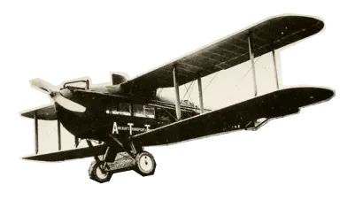

<div id="stages" class="stages">
  <div class="container">

    <div class="stages__header">
      <h2>Этапы преображения Васюков</h2>
      <p>Будущие источники обогащения васюкинцев</p>
    </div>

    <div class="stages__main">

      <div class="stages__main-1 stages__item stages__item-active">
        <div class="card">
          <div>1</div>
          <p>Строительство железнодорожной магистрали Москва-Васюки</p>
        </div>
        <div class="card">
          <div>2</div>
          <p>Открытие фешенебельной гостиницы «Проходная пешка» и других небоскрёбов</p>
        </div>
      </div>

      <div class="stages__main-2 card stages__item">
        <div>3</div>
        <p>Поднятие сельского хозяйства в радиусе на тысячу километров: производство овощей, фруктов, икры, шоколадных
          конфет</p>
      </div>

      <div class="stages__main-3 stages__item">
        <div class="card">
          <div>4</div>
          <p>Строительство дворца для турнира</p>
        </div>
        <div class="card">
          <div>5</div>
          <p>Размещение гаражей для гостевого автотранспорта</p>
        </div>
      </div>

      <div class="stages__main-4 card stages__item">
        <div>6</div>
        <p>Постройка сверхмощной радиостанции для передачи всему миру сенсационных результатов</p>
      </div>

      <div class="stages__main-5 card stages__item">
        <div>7</div>
        <p>Создание аэропорта «Большие Васюки» с регулярным отправлением почтовых самолётов и дирижаблей во все концы
          света, включая Лос-Анжелос и Мельбурн</p>
      </div>

      <div class="stages__controls">

        <button class="stages__left-btn" disabled>
          <svg width="36" height="36" viewBox="0 0 36 36" fill="none" xmlns="http://www.w3.org/2000/svg">
            <circle cx="18" cy="18" r="18" transform="rotate(-180 18 18)" fill="#313131" />
            <path d="M20.0767 24.923L13.1536 17.9999L20.0767 11.0768" stroke="#ffffff" stroke-width="1.63636"
              stroke-linecap="square" />
          </svg>
        </button>

        <div class="stages__dots">

          <svg class="stages__dots-active" xmlns="http://www.w3.org/2000/svg" width="10" height="10" viewBox="0 0 10 10"
            fill="none">
            <circle cx="5" cy="5" r="5" fill="#D9D9D9" />
          </svg>

          <svg xmlns="http://www.w3.org/2000/svg" width="10" height="10" viewBox="0 0 10 10" fill="none">
            <circle cx="5" cy="5" r="5" fill="#D9D9D9" />
          </svg>

          <svg xmlns="http://www.w3.org/2000/svg" width="10" height="10" viewBox="0 0 10 10" fill="none">
            <circle cx="5" cy="5" r="5" fill="#D9D9D9" />
          </svg>

          <svg xmlns="http://www.w3.org/2000/svg" width="10" height="10" viewBox="0 0 10 10" fill="none">
            <circle cx="5" cy="5" r="5" fill="#D9D9D9" />
          </svg>

          <svg xmlns="http://www.w3.org/2000/svg" width="10" height="10" viewBox="0 0 10 10" fill="none">
            <circle cx="5" cy="5" r="5" fill="#D9D9D9" />
          </svg>
        </div>

        <button class="stages__right-btn">
          <svg width="36" height="36" viewBox="0 0 36 36" fill="none" xmlns="http://www.w3.org/2000/svg">
            <circle cx="18" cy="18" r="18" fill="#313131" />
            <path d="M15.9233 11.0769L22.8464 18L15.9233 24.9231" stroke="#ffffff" stroke-width="1.63636"
              stroke-linecap="square" />
          </svg>
        </button>

      </div>

      <div class="stages__main-image">
        
      </div>

    </div>

  </div>
</div>